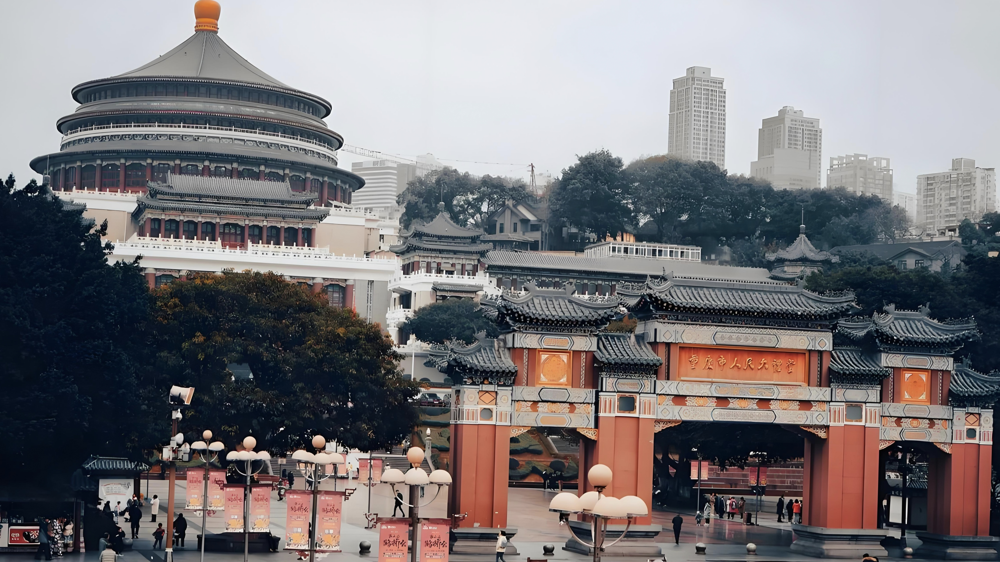
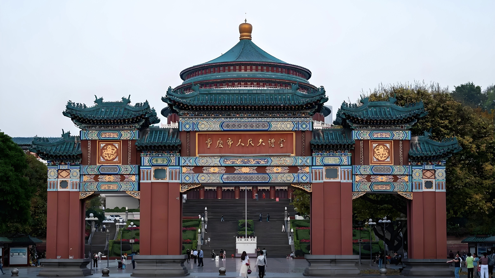

人民大礼堂
重庆市人民大礼堂是一座仿古民族建筑群，位于重庆市江北区石马河畔。这座建筑不仅庄严肃穆，更以巧妙独特的建筑布局吸引着游客。
踏进人民大礼堂，仿佛穿越时光隧道，置身于重庆悠久历史的怀抱。在内部，您可以探寻池座、底层座，感受历史文化的熏陶；登临四层环形楼座，俯瞰整个城市的美丽风景。
人民大礼堂的历史悠久，建于1951年，于1954年竣工，是中国传统宫殿建筑风格与西方建筑的大跨度结构巧妙结合的杰作。其建筑高度、内径尺寸、挑楼设计，都彰显了重庆建筑艺术的卓越成就。整个建筑由大礼堂和东、南、北楼四大部分组成，占地总面积为6.6万平方米，其中礼堂占地1.85万平方米。大厅净空高55米，内径46.33米，圆形大厅四周环绕四层挑楼，可容纳3400余人。身处这座瑰宝之中，游客们不仅能领略到优美的建筑结构，还能感受历史文化的厚重氛围。
夏季，人民大礼堂成为众多游客的心头好。其独特的建筑风格和丰富多彩的文化内涵吸引着本地市民和来自全国各地的游客。在这里，不仅可以感受到浓郁的重庆文化，还能领略到独具特色的巴渝风情。